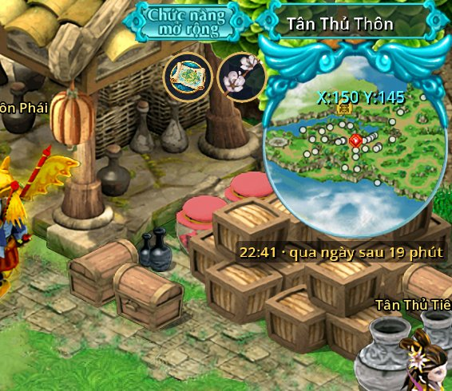

Đồng hồ máy chủ
- Từ bản 4.2
- Dưới bản đồ nhỏ
- Qua ngày lúc 23:00

- Ngay dưới khung tròn bản đồ nhỏ có dòng giờ máy chủ (giờ Việt Nam) kèm thời gian còn lại tới lúc qua ngày, ví dụ "22:41 · qua ngày sau 19 phút". Giờ lấy theo máy chủ, máy bạn để sai giờ cũng không lệch.
- Qua ngày lúc 23:00: sư môn, truy bắt, Cổ Mộ, Hoạt động hôm nay và các việc hằng ngày khác làm mới. Còn dưới 30 phút thì chữ chuyển vàng.
- Rê chuột lên dòng giờ để xem những việc sẽ làm mới. Việc tuần làm mới lúc 23:00 Chủ nhật.
- Khung tin nhắc lúc 22:30 và 22:55, kèm việc hôm nay chưa xong (số việc sư môn đã làm, thưởng Hoạt động chưa nhận). Đúng 23:00 báo "Ngày mới, việc hằng ngày đã làm mới."